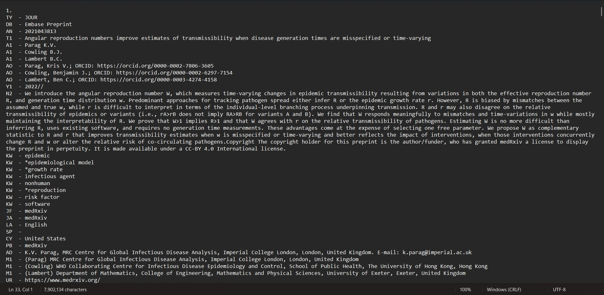

library(plyr)
library(dplyr)
library(writexl)
library(data.table)Risk of outbreaks
1 Giới thiệu
Nghiên cứu được thực hiện từ tháng 11.2023 thu thập được tổng cộng 9,797 nghiên cứu. Bổ sung thêm các nghiên cứu từ tháng 11.2023 đến tháng 07.2024 trên 5 nguồn cơ sở dữ liệu, bao gồm:
| Nguồn | 11.2023 | 07.2024 | Chênh lệch |
|---|---|---|---|
| Embase (Ovid) | 2,883 | 2,998 | 115 |
| ScienceDirect | 887 | 949 | 62 |
| PubMed | 3,448 | 3,555 | 107 |
| Web of Science | 2,546 | 2,744 | 198 |
| Cochrane Library |
2 Các bước đọc và so sánh chênh lệch dữ liệu
Dữ liệu nghiên cứu từ các nguồn được tải về dưới dạng Research Information Systems Document (.ris) hoặc NBIB File (.nbib).
2.1 Đọc dữ liệu với Notepad

Mỗi tệp dữ liệu từ các nguồn khác nhau sẽ có ký tự viết tắt khác nhau, các từ khóa tập trung:
Title (tiêu đề): T1, TI, …
Author (tác giả): A1, …
Keyword (từ khóa): KW, …
DOI: DO, …
2.2 Đọc dữ liệu vào R
2.2.1 Các package cần thiết
2.2.2 Tải và gán dữ liệu vào R
ris <- readLines("C:\\R\\riskoutbreak\\quarto\\data\\jul24\\ris.ris")Có thể thấy được từ dữ liệu dạng text trên Notepad, tiêu đề của cơ sở dữ liệu Embase được ký hiệu là T1, vậy nên để lọc được tiêu đề từ file text trên nhóm nghiên cứu cần tìm các dòng có chứa ký tự “T1”.
Các ký tự của tiêu đề bao gồm số + “.”. VD: “1.”, “100.”, …
Sử dụng hàm paste0() để tạo ra chuỗi ký tự (đặt tên là id) và tìm trong toàn bộ text. Sau đó khởi chạy có cho ra kết quả phải là tiêu đề hay không.
id <- paste0(1:100, ". ")
table(ris %in% id)
FALSE TRUE
118693 100 Kết quả bên trên cho thấy trong tổng số dòng, có 100 dòng cho ra kết quả là TRUE và còn lại là FALSE. Tương tự, tệp dữ liệu này được tải với 2000 nghiên cứu nên chọn id là từ 1 đến 2000.
2.2.3 Sử dụng hàm for để tìm tiêu đề
Đặt lại biến id từ 1 đến 3000 (có tổng cộng 2998 nghiên cứu).
Tạo ra biến nr để tìm các dòng có chứa ký tự cần tìm “T1”.
id <- paste0(1:3000, ". ")
nr <- which(ris %in% id)
l <- list()
for (i in 1:(length(nr) - 1)) {
l[[i]] <- ris[nr[i]:(nr[i + 1] - 4)]
title <- grep(pattern = "T1", x = l[[i]], value = T)
author <- paste0(grep(pattern = "A1", x = l[[i]], value = T), collapse = " ")
df <- data.frame(title = title, author = author)
l[[i]] <- df
}
df <- rbind.fill(l)
table(df$title %like% "^T1")
FALSE TRUE
8 1999 df <- df[-c(99, 224, 264, 306, 476, 530, 1649, 1425), ]Giải thích:
Tạo biến l là một list trống.
Cho hàm for chạy vòng lặp từ 1 đến độ dài của biến nr.
Mỗi lần chạy giá trị được gán vào trong list là kết quả của 1 nghiên cứu và trừ đi 4 ký tự do có 4 ký tự trống trong file text.
Tiêu đề được tách ra với pattern = “T1” và tác giả với pattern = “A1”.
Sau cùng được lưu lại dưới dạng data frame với 2 cột tiêu đề và tác giả.
Check lại cột title có bắt đầu bằng “T1” không bằng cách sử dụng %like% từ package data.table.
Phát hiện sự trùng lắp khi lọc từ code, hiện ra các ký tự khác ngoài “T1” như “KW”, “N2”, … nên loại nhưng còn khá thủ công. Có thể viết code các dòng nào không bắt đầu bằng “T1” thì xóa luôn từ bước tạo dataframe.
Lặp lại tương tự với dữ liệu của tháng 11.2023.
## Embase July 24 (2)
ris <- readLines("C:\\R\\riskoutbreak\\quarto\\data\\jul24\\ris (1).ris")
id <- paste0(1:3000, ". ")
nr <- which(ris %in% id)
l <- list()
for (i in 1:(length(nr) - 1)) {
l[[i]] <- ris[nr[i]:(nr[i + 1] - 4)]
title <- grep(pattern = "T1", x = l[[i]], value = T)
author <- paste0(grep(pattern = "A1", x = l[[i]], value = T), collapse = " ")
df1 <- data.frame(title = title, author = author)
l[[i]] <- df1
}
df1 <- rbind.fill(l)
table(df1$title %like% "^T1")
FALSE TRUE
9 997 df1 <- df1[-c(33, 807, 886, 30, 31, 671, 34, 499, 29), ]
#######
## Embase Nov 23 (1)
ris <- readLines("C:\\R\\riskoutbreak\\quarto\\data\\nov23\\ro-embase-1.ris")
id <- paste0(1:2000, ". ")
nr <- which(ris %in% id)
l <- list()
for (i in 1:(length(nr) - 1)) {
l[[i]] <- ris[nr[i]:(nr[i + 1] - 4)]
title <- grep(pattern = "T1", x = l[[i]], value = T)
author <- paste0(grep(pattern = "A1", x = l[[i]], value = T), collapse = " ")
df3 <- data.frame(title = title, author = author)
l[[i]] <- df3
}
df3 <- rbind.fill(l)
table(df3$title %like% "^T1")
FALSE TRUE
11 1999 df3 <- df3[-c(80, 213, 279, 334, 1477, 1870, 1871, 1252, 1867, 1868, 1866), ]
## Embase Nov 23 (2)
ris <- readLines("C:\\R\\riskoutbreak\\quarto\\data\\nov23\\ro-embase-2.ris")
id <- paste0(1:3000, ". ")
nr <- which(ris %in% id)
l <- list()
for (i in 1:(length(nr) - 1)) {
l[[i]] <- ris[nr[i]:(nr[i + 1] - 4)]
title <- grep(pattern = "T1", x = l[[i]], value = T)
author <- paste0(grep(pattern = "A1", x = l[[i]], value = T), collapse = " ")
df4 <- data.frame(title = title, author = author)
l[[i]] <- df4
}
df4 <- rbind.fill(l)
table(df4$title %like% "^T1")
FALSE TRUE
4 832 df4 <- df4[-c(637, 716, 501, 327), ]2.2.4 Tổng hợp các nguồn
Tại đây, tổng hợp dữ liệu theo tháng lại thành cùng một dataframe bằng cách sử dụng hàm union_all().
em_jul <- union_all(df, df1)
em_nov <- union_all(df3, df4)Sau đó, sử dụng set_diff() để tìm ra những nghiên cứu không bị trùng trong dataframe dữ liệu tháng 07.2024.
a <- setdiff(em_jul, em_nov)2.2.5 Xuất dữ liệu thành file excel
write_xlsx(a, "embase_danhsach.xlsx")